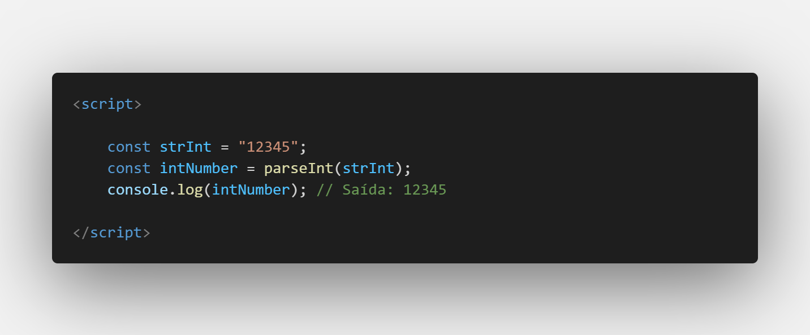
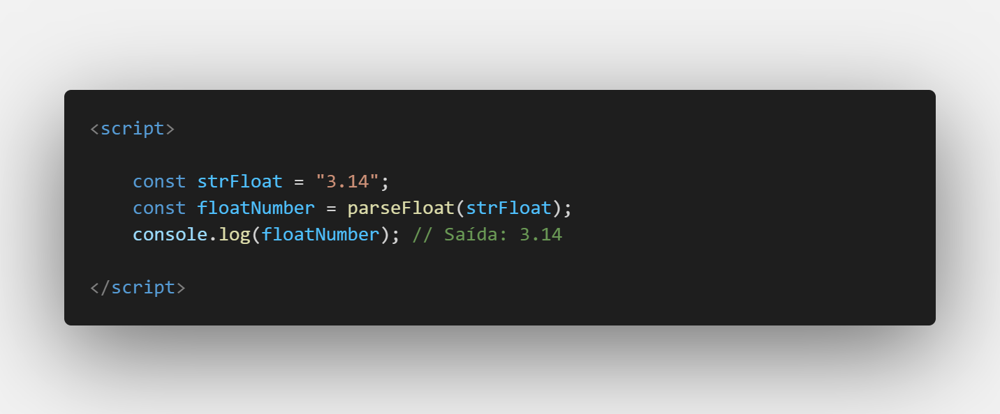
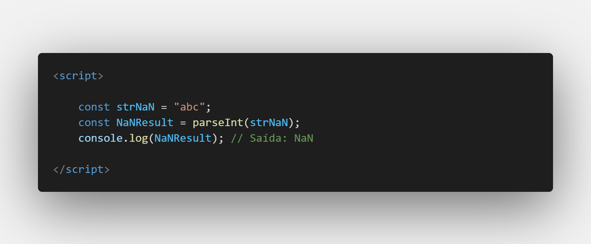

Aula 11/26 - Comportamentos numéricos em Strings
No JavaScript, parseInt e parseFloat são duas funções integradas que permitem converter strings em números. Vamos entender cada uma delas:
1º parseInt:
A função parseInt é usada para converter uma string em um número inteiro (número sem casas decimais). Ela analisa a string até encontrar um caractere que não seja um dígito válido para formar o número. Qualquer caractere não numérico após o primeiro caractere válido será ignorado. A função também pode receber um segundo argumento opcional que especifica a base numérica em que a string está escrita (por exemplo, base 10, base 16, etc.).

2º parseFloat:
A função parseFloat é usada para converter uma string em um número de ponto flutuante (número com casas decimais). Ela analisa a string até encontrar um caractere que não seja um dígito válido para formar o número. Ao contrário do parseInt, a função parseFloat reconhece o ponto decimal como um caractere válido.

Lembre-se de que ambas as funções podem não funcionar como esperado se a string de entrada não for um número válido. Se a string não puder ser analisada como um número, o resultado será NaN (Not-a-Number).
Exemplo com resultado NaN:

Em resumo, parseInt é usado para converter strings em números inteiros, enquanto parseFloat é usado para converter strings em números de ponto flutuante. Certifique-se de usar a função apropriada de acordo com o tipo de número que você deseja obter.